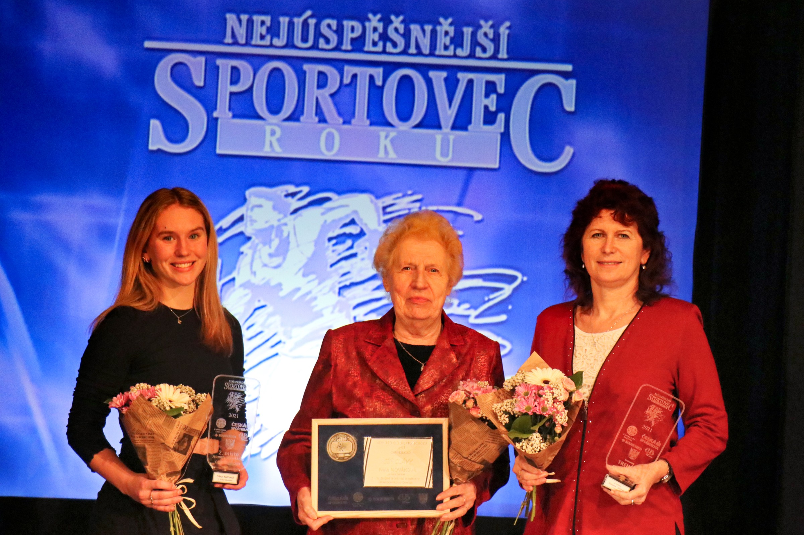
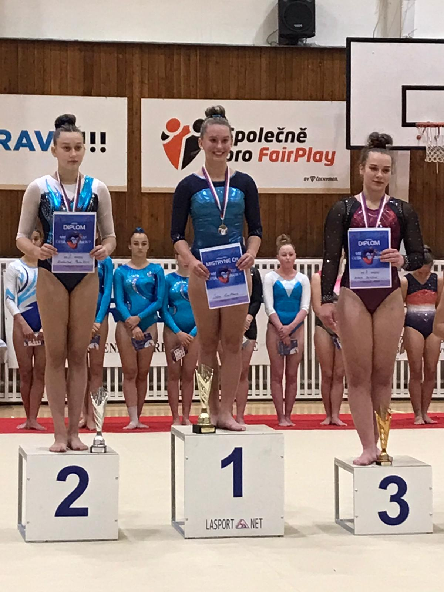
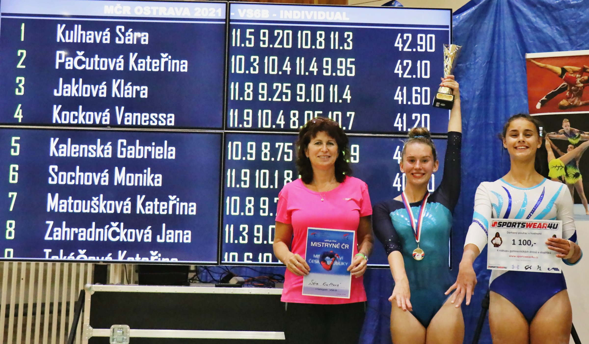
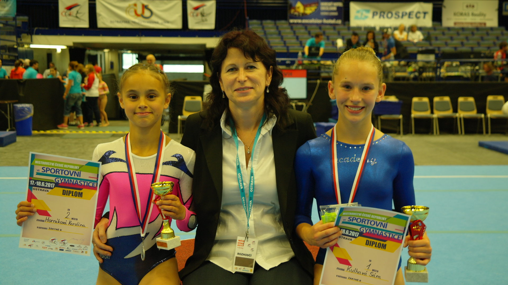
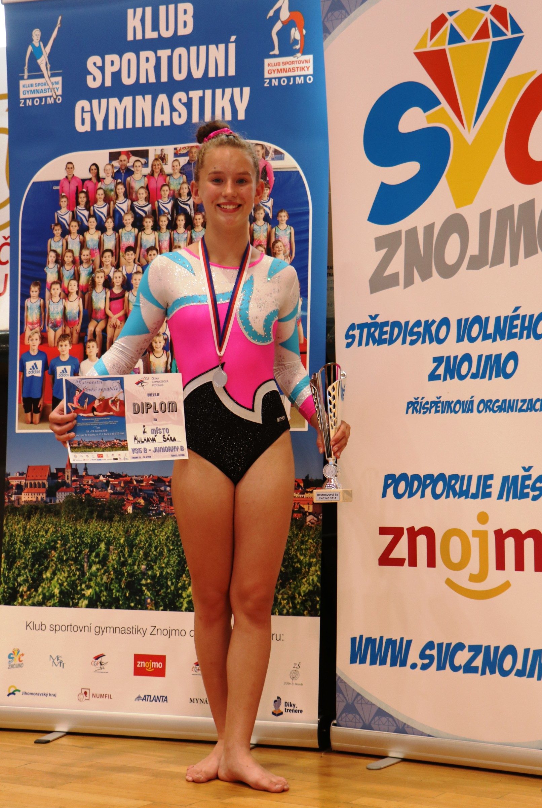

Uloženo 30. 10. 2026 z gymnastika.chrudim.cz (záložka Aktuality).

Nejúspěšnější sportovec chrudimska 2021 ve Skutči. V kategorii jednotlivců mládeže byla vyhlášena na 2. místě Sára Kulhavá. Také její trenérka Simona Linková, která se jí věnuje od malička, byla zaslouženě vyhodnocena na 2. místě v kategorii trenér a do síně slávy vstoupila za dlouholetou práci pro T.J. Sokol Chrudim Nina Nováková.

Naše nejlepší sportovní gymnastka Sára Kulhavá získala svůj druhý titul Mistryně české republiky žen v roce 2021 v Ostravě.

Úžasný a nezapomenutelný výsledek naší nejlepší gymnastky Sáry Kulhavé a její trenérky Simony Linkové na Mistrovství české republiky 2021 v Ostravě.

Mistryně ČR žákyň 2017 Sára Kulhavá (vpravo) a stříbrná Karolína Horníková (vlevo) s trenérkou a rozhodčí Simonou Linkovou.

Mistryně republiky Sára Kulhavá získala stříbro v kategorii juniorek na MČR 2018 ve Znojmě.